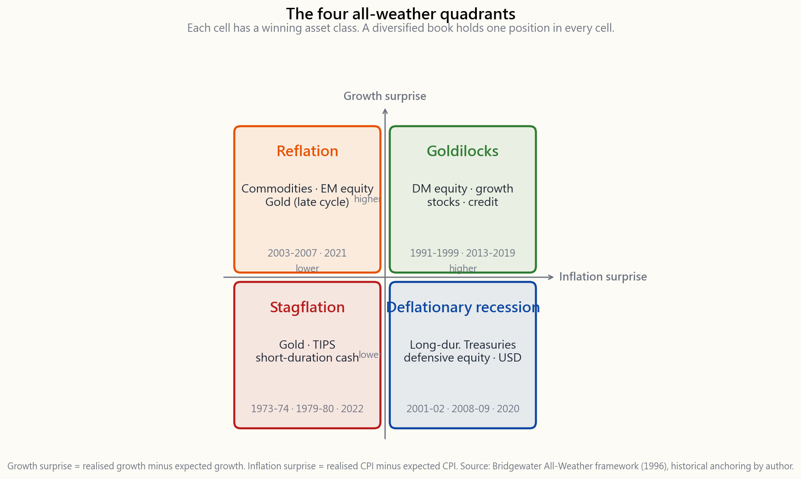

Week 15: Multi-Asset Portfolios — Risk Parity, All-Weather, and the Four-Tranche Framework
1. Why This Is Important
Week 4 gave you 60/40. Week 6 gave you gold. Week 13 gave you the short side. This week the course finally puts those pieces inside one coherent allocation framework — the same framework Bridgewater has run since 1996, the same framework Cliff Asness debuted at AQR in 2004, and the same shape the four-tranche book is designed to imitate at retail scale.
You need this lesson for four reasons.
because stocks and bonds were negatively correlated and inflation was falling. When that regime broke in 2022 — both legs down 18% together — the question stopped being "stocks or bonds?" and started being "what is the portfolio that does not depend on a single macro outcome to survive?" Multi-asset construction is the answer the institutional world settled on, and you should know the architecture before you accept or reject it.
allocation asks "what fraction of my dollars goes to each asset?" Risk parity asks "what fraction of my risk comes from each asset?" In a 60/40 book at typical vols, roughly 90% of the portfolio's variance comes from the equity sleeve, even though only 60% of the dollars are there. Once you see that, you cannot un-see it — the 40% bond sleeve is a rounding error in risk terms.
picture of macro you will ever own.** Growth × inflation, two axes, four cells, one winning asset class per cell. It is not a complete forecasting tool. It is something better — a checklist that forces you to ask, before you size any position, *which quadrant is this trade a bet on?* Most retail blow-ups come from running an unhedged single-quadrant book and not knowing it.
four-tranche frame (growth / income / store-of-value / opportunistic) is what we will populate in Weeks 16-30 with sectors, factors, options strategies, and barbell tilts. Without the multi-asset chassis from this week, those later trades have no home to go in.
This is not a recommendation that you literally run risk parity at home. The leverage and rebalancing required are institutional. It is a recommendation that you understand the principles, then apply the shape — not the leverage — to your own four-tranche book.
2. What You Need to Know
2.1 The 2022 Break and Why It Reframed Everything
Walk forward from 1981. Treasury yields fall from 15% to 0.5% over forty years. Every time inflation prints surprised softer, bonds rally. Every time growth prints surprised softer, stocks fall and bonds rally. The stock-bond correlation runs around -0.3 for two decades. 60/40 looks like a perpetual motion machine.
Then 2022 happens. The Fed hikes 525 basis points in fifteen months to fight a 9% CPI print. Long Treasuries (TLT) finish the year down 31%. The S&P 500 finishes down 18%. The Bloomberg Aggregate Bond Index finishes down 13% — its worst calendar year since the index launched in 1976. A 60/40 book loses roughly 17%, the worst real return for the strategy since 1937. The negative correlation that made 60/40 work flipped. It is positive again at the time of writing (April 2026), and the institutional consensus is that as long as inflation is the dominant macro risk, stock-bond correlation will stay positive — the same shock that scares stocks now hurts bonds too.
This is the regime change to watch for. Forty years of falling rates and falling inflation handed passive allocators a tailwind. That tailwind is gone. The portfolios designed for it inherited a hidden vulnerability: they were one-quadrant trades.
2.2 The All-Weather Quadrants — Growth × Inflation
Ray Dalio's framework, formalised at Bridgewater in 1996, organises every macro shock into a 2x2 grid. Two axes:
- Growth surprise — is GDP / earnings growth coming in higher
- Inflation surprise — is CPI / wage growth coming in higher or
The word surprise matters. Markets price expected growth and expected inflation already. What moves portfolios is the residual.
Each quadrant has a winning asset class — the one whose payoff is structurally exposed to that macro residual.

The historical anchors:
- Rising growth, rising inflation (top-left): 1970s, 2003-2007,
- Rising growth, falling inflation (top-right): 1991-1999,
- Falling growth, rising inflation (bottom-left): 1973-74,
- Falling growth, falling inflation (bottom-right): 2001-02,
The Bridgewater claim — and it is empirically defensible — is that if you can hold one asset levered to each cell at *equal risk contribution*, the four streams roughly cancel and you get a portfolio that is no longer betting on any single quadrant.
2.3 Risk Parity — Allocation by Variance, Not Dollars
The technical machinery is one equation. Given $n$ assets with volatilities $\sigma_1, \dots, \sigma_n$, the unlevered risk-parity weight on asset $i$ is
$$ w_i = \frac{1/\sigma_i}{\sum_{j=1}^{n} 1/\sigma_j} $$
That is: each asset gets a dollar weight inversely proportional to its volatility. The high-vol asset (equity at $\sigma \approx 16\%$) gets a small dollar weight; the low-vol asset (long Treasuries at $\sigma \approx 8\%$) gets a large dollar weight; and at the limit, each asset contributes the same variance to the portfolio.
For four assets at typical vols — equity 16%, 10-year Treasury 6%, gold 18%, T-bills 1% — the inverse-vol weights are:
| Asset | Vol | 1/σ | Raw weight | Risk-parity weight |
|---|---|---|---|---|
| US equity (SPY) | 16% | 6.25 | 0.067 | 6% |
| 10y Treasury (IEF) | 6% | 16.67 | 0.179 | 18% |
| Gold (GLD) | 18% | 5.56 | 0.060 | 6% |
| T-bills (BIL) | 1% | 100.0 | 1.072 | 107% — clipped to 70% |
Already a problem. The cash sleeve is so low-vol that pure inverse-vol weighting wants to put more than 100% there. The standard fix at Bridgewater is to drop cash from the unlevered book and *lever the remainder* — typically up to 1.5x to 2x of NAV — so the portfolio hits a target volatility (often 10% per year). The leverage is mostly via Treasury futures, where margin is cheap and basis is tight. The leverage is the price of admission. Without it, an unlevered all-weather book at 60% Treasuries earns only 5-6% per year, which loses to plain 60/40 over most decades.
2.4 The 2022 Risk-Parity Break
For twenty-five years, leveraged risk parity worked. Then 2022 happened the same way to the strategy as to 60/40, but worse — because the leverage amplified the bond loss.
Bridgewater's All-Weather strategy lost roughly 25% in 2022, reportedly its largest calendar drawdown since launch. AQR's Risk Parity Fund (QRPIX) lost roughly 19%. The mechanism is mechanical: leveraged Treasury futures lost 25-30% of notional, and the leverage multiplier turned that into the dominant P&L line. The equity sleeve (small dollar weight, but high vol) lost another chunk. Gold was roughly flat. T-bills earned 2%. There was no quadrant working — inflation was rising, growth was slowing, but the policy response hit bonds harder than the slowdown helped them.
The lesson is not that risk parity is broken. The lesson is that **every diversification scheme that uses leverage to equalise risk contributions assumes the cross-correlations stay where the back-test put them**. When stock-bond correlation flips from -0.3 to +0.5, the diversification math breaks and the leverage that was supposed to help you starts hurting you. This is the same risk that shows up as the volatility tail wagging the dog: the correlation tail wagged the allocation dog.
The institutional response since 2023 has been to add a fifth sleeve — explicit inflation hedges (TIPS, commodities, gold) — at larger weight than the original Bridgewater template, and to hold less leverage in the bond sleeve. The shape is converging on what we call the four-tranche book.
2.5 The Four Tranches at Retail Scale
Strip out the institutional leverage and what remains is a clean four-bucket structure that any retail account can hold using ETFs.

The four tranches:
(VTI, SPY) plus a quality factor tilt (QUAL) covered in Week 23. This is the engine of long-run real return. It is also the sleeve that loses in the bottom-left and bottom-right quadrants, which is precisely why it is not 60-100% of the book.
with a small investment-grade credit slice (LQD). This is the sleeve that wins in the bottom-right (deflation) cell and provides the carry that finances the other tranches. After 2022 the institutional consensus is to under-weight duration relative to the historical risk-parity prescription — 30%, not 60%.
sleeve that wins in the bottom-left (stagflation) cell. Remember these instruments are belief trades — gold has no coupon, TIPS pay only the inflation print — but the belief has a 1000-year track record and a reliable bid in regime breaks.
and the options-premium / barbell trades from Weeks 25-30. This is the sleeve that lets you add when something gets cheap. Dry powder is not a cost — it is the asymmetric option that funds the other three sleeves' rebalances.
| Tranche | Weight | Vehicles | Quadrant served |
|---|---|---|---|
| Growth | 40% | VTI, SPY, QQQ, QUAL | Top-right (Goldilocks) |
| Income | 30% | IEF, LQD, GOVT | Bottom-right (deflation) |
| Store-of-value | 20% | GLD, IAU, SCHP | Bottom-left (stagflation) |
| Opportunistic | 10% | BIL, SGOV, options | Top-left + dry powder |
This is not a risk-parity book — the dollar weights are higher than the equal-risk-contribution math would prescribe for equity. It is deliberately closer to a 60/40 starting point, *adjusted for the post-2022 regime*. The store-of-value sleeve is materially larger than what Bridgewater's original 1996 template ran (5-15%), and the income sleeve is materially smaller. The shape is the barbell — actual safety on one end, asymmetric upside on the other — applied at the asset-allocation layer.
2.6 Backtest — All-Weather vs 60/40 vs 100% Equity, 1928-2024
Run the four-tranche book back against Damodaran's 1928-2024 annual data, with gold filled at 4% real per year before 1971 (the gold-standard window where the price was fixed) and at the actual London PM-fix annual return after. Annual rebalance. The results:
| Metric | 100% equity | 60/40 | All-weather (40/30/20/10) |
|---|---|---|---|
| Geometric annual return (nominal) | 9.6% | 7.4% | 6.7% |
| Geometric annual real return | 6.6% | 4.4% | 3.7% |
| Annualised volatility | 19.6% | 12.0% | 9.4% |
| Sharpe (excess over T-bills) | 0.30 | 0.30 | 0.32 |
| Max real drawdown | -75% (1929-32) | -53% (1929-32) | -38% (1973-74) |
| Worst calendar year | -44% (1931) | -28% (1931) | -19% (1981) |
| Decades with positive real return | 8 of 10 | 9 of 10 | 10 of 10 |
The all-weather book gives up about 90 bps of real CAGR versus 60/40 in exchange for two things: every decade is positive in real terms, and the worst real drawdown is 15 percentage points smaller. That trade is worth it for an investor who lives off the portfolio. It is not worth it for a 35-year-old with a 30-year horizon and a paycheque, who should be closer to a barbell shape — heavier equity, smaller but real safety sleeve, larger opportunistic tail.
The interactive below lets you slide the four weights and watch the historical wealth path, max drawdown, Sharpe, and drawdown duration update in real time. Try the institutional 35/40/15/10 template, the 40/30/20/10 retail template, and a barbell at 60/10/20/10 and compare them on the same chart.
2.7 What This Lesson Is Not
A few things this lesson is not telling you to do.
- Not telling you to run leverage. The Bridgewater leverage is
- Not telling you to abandon 60/40. For a long-horizon
- Not telling you to equal-weight quadrants forever. The shape
3. Common Misconceptions
parity weights inversely by volatility, which gives a small equity weight and a large bond weight, and then levers the whole thing to a target vol. A 50/50 mix is closer to risk-parity than 60/40 but it is still equity-dominated in variance terms.
about the cross-correlation between return streams, not the number of tickers. A portfolio of 100 tech stocks is one return stream. A portfolio of one S&P fund + one Treasury fund + gold is three.
harder regime than the one it was designed for. In the 1970s 60/40 had a real-return drawdown of -33% and recovered. The regime-vulnerability is real but the portfolio still works.
it earned less in compound terms. Its claim is on lower drawdowns and a smoother return path, not higher returns.
not its standalone return — it is its covariance with stress. At a 20% allocation it added 80 bps of Sharpe to an all-weather book over 1971-2024 even though it earned less than equity.
from quadrant-specific shocks. It does not protect you from a correlation regime change. 2022 was the latter.
sleeve that lets you add 5% to equity at a 30% drawdown is not drag — it is the option that pays for itself in the next bear market.
run Bridgewater's version of all-weather at 10% target vol. You do not need it to run the unlevered four-tranche shape, which targets 9-10% vol naturally because of how the dollar weights land.
similar; the shape is not. Two portfolios with the same Sharpe but different max drawdowns are not equivalent for a retiree, an endowment, or anyone using options on the equity sleeve for tax efficiency.
(the BLS CPI). They do not solve regime-shift inflation (the 1970s) and they do not solve sovereign debasement. Gold is the second leg of the store-of-value tranche for a reason.
4. Q&A Section
Q: Should I literally run 40/30/20/10 in my IRA tomorrow? A: As a starting point, yes — it is a defensible default and will not hurt you over a 10-year horizon. But the right long-run weight depends on your horizon and your other income sources. A 30-year-old with a stable paycheque should probably tilt the equity sleeve up toward 60-70%; a 65-year-old drawing 4% per year should probably stay at 40-50% equity. The chassis is what is fixed; the tilts are personal.
Q: How do I rebalance a four-tranche book? A: Once a year, in January, mechanically. If any sleeve is more than 5 percentage points off target, trade it back. Week 11's interactive shows that band rebalancing beats calendar rebalancing slightly on turnover but the gap is small — what matters is doing it at all.
Q: Is risk parity practical for a $50,000 account? A: The dollar-weight shape is. The leverage is not. To get Bridgewater's 10% target vol unlevered you would need 80% bonds, and that earns 5% nominal — not enough. Skip the leverage, run the four-tranche shape unlevered, target 9-10% vol naturally.
Q: Why 20% in store-of-value, not the historical 5%? A: Because we are no longer in the 1996-2020 disinflationary regime. Bridgewater's original 5-7% gold sleeve was sized for a world where inflation was a tail risk, not a base case. April 2026 is not that world. The regime change anchors the chassis adjustment; the bigger gold weight follows from it.
Q: What about international equity? You only mention US. A: For a US-domiciled investor, after fees, withholding taxes, currency hedging costs, and capital controls, US-listed equities are the only equities reliably investable. Owning EFA or VWO is an option but a small one, and most of the international exposure you actually want is already inside SPY's international revenue lines.
**Q: Should I add private equity or venture in the opportunistic sleeve?** A: Not at retail. Liquidity, fees, and the 10-year lockup destroy the "opportunistic" property. The retail opportunistic sleeve should stay liquid — cash, T-bills, and the options structures from Weeks 25-30. A barbell only works if both ends are liquid.
Q: What if I disagree with the quadrant model? A: Run the unlevered version and see how it performs in a decade you think the model gets wrong. The 1970s and 2022 are the two periods where the model gets criticised. In both, the all-weather book had a smaller real drawdown than 60/40 and a positive real return for the decade. The model is not perfect; it is more robust than the single-quadrant alternatives.
Q: How does this connect to factor investing in Week 23? A: The four tranches are the asset-class chassis. Factor tilts — quality, value, momentum, low-vol — go inside the growth tranche. You do not run quality at the expense of bonds; you run quality at the expense of plain S&P inside the 40% equity sleeve.
Q: Is the all-weather chassis tax-efficient? A: Less than 100% equity. Treasury and TIPS coupons are taxable as ordinary income at the federal level (state-tax-exempt for Treasuries). Gold ETFs (GLD, IAU) are taxed as collectibles at 28% long-term. Hold the income and store-of-value tranches in tax- advantaged accounts (IRA, 401k, HSA) and reserve the taxable account for the equity sleeve, where long-term cap gains and qualified dividends apply.
**Q: What is the single biggest mistake retail investors make with this framework?** A: Looking at the last twelve months. The all-weather chassis is a multi-decade architecture; in any given twelve-month window it will underperform whichever single quadrant is winning. The investor who checks performance monthly and chases the leader is not running all-weather — they are running momentum on quadrants, badly.
**Q: How does this relate to the dashboard at the top of the website?** A: The dashboard tracks a four-tranche book at 50/20/20/10 with a 2-year duration income sleeve and a barbell options overlay on the opportunistic sleeve. It is one specific instantiation of this chassis, not the chassis itself.
第15週：多資產投資組合——風險平價、全天候策略與四倉架構
1. 為何本課題至關重要
第4週講過60/40。第6週講過黃金。第13週講過短倉。本週課程終於將這些概念整合進一個完整的資產配置架構——正是橋水基金自1996年沿用至今的架構、克利夫·阿斯尼斯2004年於AQR首創的同一架構，以及四倉書所要在零售層面模仿的形態。
學習本課題有四個原因。
本課題並非建議你在家裡實際執行風險平價。所需的槓桿和再平衡屬機構規模。建議的是理解其原則，再將其形態——而非槓桿——應用到你自己的四倉投資組合中。
2. 必備知識
2.1 2022年的斷裂及其如何重塑一切
從1981年往前推。國債收益率在四十年間從15%跌至0.5%。每當通脹數據意外偏軟，債券便上漲。每當增長數據意外偏軟，股票下跌而債券上漲。股債相關性在二十年間維持在約-0.3。60/40看起來像永動機。
然後2022年發生了。美聯儲在十五個月內加息525基點，以對抗9%的CPI數據。長期國債（TLT）全年下跌31%。標普500下跌18%。彭博綜合債券指數下跌13%——是該指數自1976年創立以來最差的日曆年表現。60/40投資組合損失約17%，是自1937年以來最差的實際回報。令60/40奏效的負相關性逆轉了。在撰文之時（2026年4月），相關性再度呈正值，機構共識認為，只要通脹仍是主導的宏觀風險，股債相關性將持續維持正值——令股票受驚的同一衝擊現在也會傷害債券。
這是需要密切關注的環境轉變。四十年的利率下行與通脹回落，為被動配置者提供了順風車。這股順風已然消逝。為此而設計的投資組合繼承了一個隱藏的弱點：它們都是單象限的交易。
2.2 全天候象限——增長對通脹
瑞·達利歐的框架於1996年在橋水正式確立，將每一個宏觀衝擊組織成一個2×2的格局。兩條坐標軸：
- 增長意外 — 本地生產總值／盈利增長是否高於或低於市場預期？
- 通脹意外 — CPI／工資增長是否高於或低於市場預期？
每個象限各有一類勝出資產——其回報在結構上暴露於該宏觀殘差的資產類別。

歷史錨點：
- 增長上升，通脹上升（左上角）：1970年代、2003-2007年再通脹、2021-22年反彈。勝出者：商品、能源、原材料、新興市場股票、周期末段黃金。
- 增長上升，通脹下降（右上角）：1991-1999年、2013-2019年。「金髮女孩」象限。勝出者：發達市場股票、增長股、信貸。
- 增長下降，通脹上升（左下角）：1973-74年、1979-80年、2022年。滯脹。60/40陣亡的象限。勝出者：黃金、通脹掛鈎債券、短存續期現金、能源。
- 增長下降，通脹下降（右下角）：2001-02年、2008-09年、2020年。通縮衰退。勝出者：長存續期國債、美元現金、防禦性股票（必需消費品、醫療保健）。
2.3 風險平價——以方差而非資金配置
技術原理只需一條公式。對於具有波動性$\sigma_1, \dots, \sigma_n$的$n$項資產，資產$i$的非槓桿風險平價權重為
$$ w_i = \frac{1/\sigma_i}{\sum_{j=1}^{n} 1/\sigma_j} $$
即：每項資產獲得與其波動性成反比的資金權重。高波動資產（股票，$\sigma \approx 16\%$）獲得較小的資金權重；低波動資產（長期國債，$\sigma \approx 8\%$）獲得較大的資金權重；最終每項資產對投資組合的方差貢獻相等。
對四項典型波動性資產——股票16%、十年期國債6%、黃金18%、國庫票據1%——反向波動性權重如下：
| 資產 | 波動性 | 1/σ | 原始權重 | 風險平價權重 |
|---|---|---|---|---|
| 美國股票（SPY） | 16% | 6.25 | 0.067 | 6% |
| 十年期國債（IEF） | 6% | 16.67 | 0.179 | 18% |
| 黃金（GLD） | 18% | 5.56 | 0.060 | 6% |
| 國庫票據（BIL） | 1% | 100.0 | 1.072 | 107%——壓縮至70% |
問題已然浮現。現金倉的波動性極低，純粹的反向波動性加權希望將超過100%的資金放入其中。橋水的標準解決方案是從非槓桿投資組合中剔除現金，並對其餘部分加槓桿——通常達到資產淨值的1.5至2倍——使投資組合達到目標波動性（通常為每年10%）。槓桿主要通過國債期貨實現，因為其基差緊密、保證金成本低廉。槓桿是入場費。 沒有槓桿，非槓桿全天候投資組合在60%國債的情況下每年僅賺取5-6%，在大多數年代都跑輸單純的60/40。
2.4 2022年風險平價的失效
二十五年來，槓桿風險平價策略運作良好。然後2022年以同樣的方式打擊了這一策略，甚至比打擊60/40更為嚴重——因為槓桿放大了債券的損失。
橋水的全天候策略在2022年損失約25%，據報是自成立以來最大的日曆年回撤。AQR的風險平價基金（QRPIX）損失約19%。機制是機械性的：槓桿國債期貨名義損失25-30%，而槓桿倍數將其轉化為主導的損益項目。股票倉位（資金權重小，但波動性高）再損失一塊。黃金大致持平。國庫票據賺取2%。沒有任何象限奏效——通脹上升，增長放緩，但政策應對對債券的打擊遠比放緩對其的幫助更大。
教訓並非風險平價已然失效。教訓是每一種利用槓桿來均衡風險貢獻的分散投資方案，都假設交叉相關性保持在回測的水平。當股債相關性從-0.3翻轉至+0.5，分散投資的數學就會失效，原本應該幫助你的槓桿開始傷害你。這與波動性尾部搖動狗身的風險如出一轍：相關性尾部搖動了資產配置之身。
自2023年以來，機構的應對是增加一個第五倉位——明確的通脹對沖工具（通脹掛鈎債券、商品、黃金）——其比重高於橋水原始模板，並在債券倉位持有更少槓桿。這一形態正在向我們所稱的四倉投資組合收斂。
2.5 零售層面的四個倉位
剝去機構槓桿，剩下的是一個清晰的四籃結構，任何零售賬戶均可透過交易所買賣基金持有。
四個倉位如下：
| 倉位 | 比重 | 工具 | 服務的象限 |
|---|---|---|---|
| 增長倉 | 40% | VTI、SPY、QQQ、QUAL | 右上角（金髮女孩） |
| 收益倉 | 30% | IEF、LQD、GOVT | 右下角（通縮） |
| 價值儲存倉 | 20% | GLD、IAU、SCHP | 左下角（滯脹） |
| 機會倉 | 10% | BIL、SGOV、期權 | 左上角＋乾火藥 |
這不是一個風險平價投資組合——資金權重高於等風險貢獻數學對股票的配方。它刻意更接近60/40的起點，針對後2022年市場環境作出調整。價值儲存倉的比重明顯大於橋水1996年原始模板（5-15%），收益倉的比重則明顯較小。這一形態是槓鈴——一端是真正的安全資產，另一端是不對稱的上行潛力——應用於資產配置層面。
2.6 回測——全天候對60/40對100%股票，1928-2024年
以達摩達蘭1928-2024年年度數據回測四倉投資組合，其中1971年前（金本位時期，金價固定）黃金以每年4%實際回報填充，之後以倫敦下午金定盤實際年回報計算。每年再平衡。結果如下：
| 指標 | 100%股票 | 60/40 | 全天候（40/30/20/10） |
|---|---|---|---|
| 複利年回報（名義） | 9.6% | 7.4% | 6.7% |
| 複利年實際回報 | 6.6% | 4.4% | 3.7% |
| 年化波動性 | 19.6% | 12.0% | 9.4% |
| 夏普比率（超過國庫票據的超額回報） | 0.30 | 0.30 | 0.32 |
| 最大實際回撤 | -75%（1929-32年） | -53%（1929-32年） | -38%（1973-74年） |
| 最差日曆年 | -44%（1931年） | -28%（1931年） | -19%（1981年） |
| 實際回報為正的年代 | 10個年代中的8個 | 10個年代中的9個 | 10個年代全部 |
全天候投資組合相對於60/40放棄了約90個基點的實際複合年增長率，換取兩樣東西：每個年代——自1928年以來的每一個年代——實際回報均為正值，以及最大實際回撤小15個百分點。對於靠投資組合生活的投資者來說，這筆交換是值得的。對於有30年投資期限且有薪酬收入的35歲投資者而言，這筆交換可能不值得——他們應該更接近槓鈴形態：股票比重更高，安全倉位較小但確實存在，機會尾部比重更大。
以下互動工具讓你拖動四個倉位的滑桿，實時觀察歷史財富路徑、最大回撤、夏普比率和回撤持續時間的變化。試試機構的35/40/15/10模板、40/30/20/10零售模板，以及60/10/20/10的槓鈴配置，在同一圖表上比較。
2.7 本課題不涉及的內容
有幾件事本課題並非叫你去做。
- 不是叫你加槓桿。 橋水的槓桿只在具備期貨准入、專業風險管理，以及能承受相關性失效時25%以上回撤的情況下才可行。零售四倉形態不使用槓桿。
- 不是叫你放棄60/40。 對於長期累積資產的投資者而言，60/40仍然合理。全天候形態對投資期限十年或以下、或風險預算無法承受50%以上股票回撤的人士而言，是正確的底盤。
- 不是叫你永遠等權各象限。 形態應隨環境傾斜。我們預計四十年的被動投資環境正在打破；四倉投資組合是一個能夠傾斜而不放棄底盤的工具。第16至22週將填充具體傾斜配置。
3. 常見誤解
4. 問答環節
問：我明天應該在個人退休賬戶中直接執行40/30/20/10嗎？ 答：作為起點，可以——這是合理的默認配置，在十年投資期內不會有害。但正確的長期比重取決於你的投資期限和其他收入來源。有穩定薪酬的30歲人士應該將股票倉位傾斜至60-70%；每年提取4%的65歲人士應該將股票倉位保持在40-50%。底盤是固定的；傾斜是個人化的。
問：如何對四倉投資組合進行再平衡？ 答：每年一月，機械地執行一次。如果任何倉位偏離目標超過5個百分點，便交易回歸。第7週的互動工具顯示，區間再平衡在交易量上略優於日曆再平衡，但差距甚微——重要的是實際去做。
問：風險平價對5萬美元的賬戶實際可行嗎？ 答：資金權重形態可行。槓桿不可行。要在非槓桿情況下達到橋水10%目標波動性，你需要80%債券，而這只能賺取5%名義回報——遠遠不夠。略去槓桿，執行非槓桿四倉形態，自然達到9-10%波動性目標。
問：為何價值儲存倉佔20%而非歷史上的5%？ 答：因為我們已不再身處1996至2020年的去通脹環境。橋水原始5-7%的黃金倉是在通脹屬於尾部風險而非基本情境的世界中定規模的。2026年4月不是那個世界。環境轉變確立了底盤調整的基礎；黃金比重的增加由此而來。
問：那國際股票呢？你只提到了美股。 答：對美國居民投資者而言，扣除費用、預扣稅、貨幣對沖成本和資本管制後，美國上市股票是唯一可靠可投資的股票。EFA或VWO是選項，但佔比甚微，而你真正想要的大部分國際敞口已包含在SPY的國際收入項目中。
問：機會倉是否應該加入私募股權或創投？ 答：零售層面不應。流動性、費用和十年鎖定期破壞了「機會性」的特性。零售機會倉應保持流動性——現金、國庫票據，以及第25至30週的期權結構。槓鈴只有在兩端均具流動性時才能發揮作用。
問：如果我不認同象限模型呢？ 答：執行非槓桿版本，看看在你認為模型判斷錯誤的年代它的表現如何。1970年代和2022年是模型受到最多批評的兩個時期。在這兩個時期，全天候投資組合的實際回撤均小於60/40，且整個年代的實際回報均為正值。這個模型並不完美；它比單象限替代方案更加穩健。
問：這與第23週的因子投資有何關聯？ 答：四倉是資產類別底盤。因子傾斜——質量、價值、動量、低波動——放在增長倉內部。你不是以質量因子取代債券；你是在40%股票倉位內，以質量因子取代單純的標普指數。
問：全天候底盤的稅務效益如何？ 答：不如100%股票。國債和通脹掛鈎債券票息在聯邦層面以普通收入稅率徵稅（國債在州稅層面豁免）。黃金交易所買賣基金（GLD、IAU）按收藏品稅率徵收28%長期資本增值稅。將收益倉和價值儲存倉持有於稅務優惠賬戶（個人退休賬戶、401k、健康儲蓄賬戶）中，將應稅賬戶留給股票倉，因為長期資本增值和合資格股息適用較低稅率。
問：零售投資者在這個框架中最常犯的單一最大錯誤是什麼？ 答：只看最近十二個月的表現。全天候底盤是一個跨十年的架構；在任何特定的十二個月窗口內，它都會跑輸當時勝出的單一象限。每月查看表現並追逐領先者的投資者，執行的不是全天候策略——他們是在按象限追趨勢，且做得一塌糊塗。
問：這與網站頂部的儀表板有何關係？ 答：儀表板追蹤一個50/20/20/10四倉投資組合，收益倉採用兩年存續期，機會倉加上槓鈴式期權疊加。這是本底盤的一個具體實例，而非底盤本身。
第15週：多資產投資組合——風險平價、全天候策略與四分倉框架
1. 為什麼這很重要
第4週給了你六四配置。第6週給了你黃金。第13週給了你空頭部位。本週課程終於將這些元素整合進一個完整的資產配置框架——這與橋水基金自1996年以來執行的框架相同，也與克利夫·阿斯尼斯2004年在AQR推出的框架如出一轍，更是四分倉書籍所模仿、適用於散戶規模的相同架構。
你需要學習這一課有四個原因。
這並不是建議你在家裡實際執行風險平價策略。所需的槓桿和再平衡要求屬於機構層級。建議是讓你理解這些原則，然後將其形狀——而非槓桿——應用到你自己的四分倉投資組合中。
2. 你需要了解的內容
2.1 2022年的斷裂，以及它為何改變了一切
從1981年說起。國庫券殖利率在四十年間從15%跌至0.5%。每次通膨意外下行，債券就反彈。每次經濟成長意外放緩，股票下跌而債券反彈。股債相關性在二十年間維持在約-0.3。六四配置看起來像一台永動機。
然後2022年發生了。聯準會在十五個月內升息525個基本點，以應對9%的消費者物價指數漲幅。長期國庫券（TLT）年底下跌31%。標普500下跌18%。彭博綜合債券指數下跌13%——自該指數1976年成立以來最差的一個日曆年度。六四配置組合虧損約17%，是自1937年以來該策略最差的實質報酬。讓六四配置得以運作的負相關性翻轉了。截至本文撰寫時（2026年4月），相關性已重回正值，機構共識是：只要通膨仍是主要的總體風險，股債相關性將持續為正——現在驚嚇股票的那道衝擊，同樣也傷害債券。
這是需要密切關注的情境轉變。四十年的利率下行和通膨下行為被動型投資人提供了順風車。那股順風已經消逝。為之設計的投資組合繼承了一個隱藏的脆弱性：它們是單象限的交易。
2.2 全天候象限——成長×通膨
瑞·達利歐的框架，於1996年在橋水正式化，將每一次總體衝擊組織進一個2×2的矩陣中。兩條軸線：
- 成長意外——國內生產毛額／盈餘成長是否比市場定價更高或更低？
- 通膨意外——消費者物價指數／工資成長是否比市場定價更高或更低？
每個象限都有一個勝出資產類別——其報酬結構在結構上暴露於那個總體殘差的資產。
歷史定錨：
- 成長上升、通膨上升（左上）：1970年代、2003-2007年再通膨、2021-22年。贏家：原物料、能源、材料、新興市場股票、週期末段黃金。
- 成長上升、通膨下降（右上）：1991-1999年、2013-2019年。「金髮女孩」格。贏家：已開發市場股票、成長股、信用。
- 成長下降、通膨上升（左下）：1973-74年、1979-80年、2022年。停滯性通膨。六四配置崩潰的格子。贏家：黃金、抗通膨債券、短存續期間現金、能源。
- 成長下降、通膨下降（右下）：2001-02年、2008-09年、2020年。通縮型衰退。贏家：長存續期間國庫券、美元現金、防禦型股票（民生消費、醫療保健）。
2.3 風險平價——依變異數而非資金分配
技術機制就是一條方程式。給定$n$個波動性為$\sigma_1, \dots, \sigma_n$的資產，資產$i$的未加槓桿風險平價權重為
$$ w_i = \frac{1/\sigma_i}{\sum_{j=1}^{n} 1/\sigma_j} $$
即：每個資產獲得與其波動性成反比的資金權重。高波動性資產（股票，$\sigma \approx 16\%$）獲得小資金權重；低波動性資產（長期國庫券，$\sigma \approx 8\%$）獲得大資金權重；在極限情況下，每個資產對投資組合的變異數貢獻相同。
以四個典型波動性的資產為例——股票16%、10年期國庫券6%、黃金18%、短期國庫券1%——其逆波動性權重為：
| 資產 | 波動性 | 1/σ | 原始權重 | 風險平價權重 |
|---|---|---|---|---|
| 美國股票（SPY） | 16% | 6.25 | 0.067 | 6% |
| 10年期國庫券（IEF） | 6% | 16.67 | 0.179 | 18% |
| 黃金（GLD） | 18% | 5.56 | 0.060 | 6% |
| 短期國庫券（BIL） | 1% | 100.0 | 1.072 | 107%——截斷至70% |
問題已然出現。現金部位的波動性極低，純粹的逆波動性加權希望將超過100%配置在此。橋水的標準解決方案是將現金從未加槓桿的投資組合中剔除，然後對剩餘部分加槓桿——通常槓桿倍數達淨值的1.5倍至2倍——使投資組合達到目標波動性（通常為每年10%）。槓桿主要透過期貨來實現，因為保證金成本低廉、基差緊密。槓桿是進場的代價。 沒有槓桿，未加槓桿的全天候投資組合在60%國庫券配置下每年僅能賺取5-6%，在大多數年代都輸給普通的六四配置。
2.4 2022年的風險平價斷裂
二十五年來，加槓桿的風險平價運作良好。然後2022年以與六四配置相同的方式對這個策略造成衝擊，甚至更糟——因為槓桿放大了債券的虧損。
橋水全天候策略在2022年虧損約25%，據報導是自成立以來最大的日曆年度回撤。AQR的風險平價基金（QRPIX）虧損約19%。機制是機械性的：加槓桿的國庫券期貨損失了名義價值的25-30%，而槓桿乘數將此轉化為主要的損益項目。股票部位（小資金權重但高波動性）又虧損了一塊。黃金大致持平。短期國庫券賺取2%。沒有任何象限奏效——通膨上升，成長放緩，但政策反應對債券的打擊遠超過放緩對債券的支撐。
這個教訓不是風險平價已然崩潰。教訓是：每一種使用槓桿來均等化風險貢獻的分散投資方案，都假設交叉相關性會維持在回測所給出的水準。 當股債相關性從-0.3翻轉至+0.5，分散投資的數學就會崩潰，原本應該幫助你的槓桿反而開始傷害你。這與波動性尾巴搖動狗的風險相同：相關性尾巴搖動了資產配置之狗。
2023年以來，機構界的因應是增加一個第五個部位——明確的通膨避險（抗通膨債券、原物料、黃金）——其權重大於橋水原始模板，且在債券部位持有更少的槓桿。這個形狀正在向我們所稱的四分倉投資組合靠攏。
2.5 散戶規模的四個分倉
去掉機構槓桿，剩下的是一個乾淨的四桶結構，任何散戶帳戶都可以使用指數股票型基金來持有。
四個分倉：
| 分倉 | 權重 | 工具 | 對應象限 |
|---|---|---|---|
| 成長 | 40% | VTI、SPY、QQQ、QUAL | 右上（金髮女孩） |
| 收益 | 30% | IEF、LQD、GOVT | 右下（通縮） |
| 價值儲存 | 20% | GLD、IAU、SCHP | 左下（停滯性通膨） |
| 機會型 | 10% | BIL、SGOV、選擇權 | 左上＋閒置火力 |
這不是一個風險平價投資組合——相較於均等風險貢獻數學對股票所規定的權重，此處的資金權重更高。它刻意更接近六四配置的起點，並針對2022年後的情境進行調整。價值儲存部位實質上大於橋水1996年原始模板所配置的比例（5-15%），而收益部位則實質上較小。這個形狀是槓鈴——一端是真實的安全性，另一端是非對稱的上行潛力——應用於資產配置層級。
2.6 回測——全天候 vs 六四配置 vs 100%股票，1928-2024年
以達莫達蘭1928-2024年年度數據對四分倉投資組合進行回測，與黃金標準時代（1971年前價格固定的窗口）每年實質報酬4%的黃金填補數據，以及1971年後實際倫敦下午定盤價年度報酬相對照。每年再平衡。結果如下：
| 指標 | 100%股票 | 六四配置 | 全天候（40/30/20/10） |
|---|---|---|---|
| 名目幾何年化報酬 | 9.6% | 7.4% | 6.7% |
| 實質幾何年化報酬 | 6.6% | 4.4% | 3.7% |
| 年化波動性 | 19.6% | 12.0% | 9.4% |
| 夏普比率（超額於短期國庫券） | 0.30 | 0.30 | 0.32 |
| 最大實質回撤 | -75%（1929-32年） | -53%（1929-32年） | -38%（1973-74年） |
| 最差日曆年度 | -44%（1931年） | -28%（1931年） | -19%（1981年） |
| 實質報酬為正的年代 | 10個中的8個 | 10個中的9個 | 10個中的10個 |
全天候投資組合相較於六四配置放棄了約90個基本點的實質年化複合成長率，換來兩件事：每個年代——自1928年以來的每一個十年——實質報酬均為正值；而且最差實質回撤小了15個百分點。對於靠投資組合生活的投資人而言，這個交換是值得的。對於一位有30年投資期限和薪資收入的35歲投資人而言，它可能不值得——他們應該更接近槓鈴形狀——股票部位更重、安全部位更小但真實存在、機會型尾部更大。
以下互動功能讓你滑動四個權重，即時觀看歷史財富路徑、最大回撤、夏普比率和回撤持續時間的變化。試試機構版的35/40/15/10模板、40/30/20/10散戶模板，以及60/10/20/10的槓鈴配置，並在同一圖表上進行比較。
2.7 本課並非在告訴你什麼
有幾件事本課並非在告訴你去做。
- 不是在告訴你使用槓桿。 橋水的槓桿只有在有期貨使用權限、專業風險管理，以及能承受相關性崩潰時25%以上回撤的情況下才可行。散戶四分倉形狀不使用槓桿。
- 不是在告訴你放棄六四配置。 對於長期積累型投資人，六四配置仍然站得住腳。全天候形狀是適合投資期限為十年或更短、或風險預算無法承受50%以上股票回撤的人的正確底盤。
- 不是在告訴你永遠均等加權各象限。 形狀應該隨著情境傾斜。我們預期那40年的被動情境正在打破；四分倉投資組合是一個能夠在不放棄底盤的情況下進行傾斜的工具。第16-22週將填充那些傾斜配置。
3. 常見誤解
4. 問答章節
問：我明天應該在個人退休帳戶中直接執行40/30/20/10嗎？ 答：作為起點，是的——這是一個合理的預設值，在10年投資期限內不會對你造成傷害。但正確的長期權重取決於你的投資期限和其他收入來源。一個有穩定薪資的30歲投資人，股票部位可能應傾斜至60-70%；一個每年提取4%的65歲投資人，股票配置可能應維持在40-50%。底盤是固定的；傾斜因人而異。
問：如何對四分倉投資組合進行再平衡？ 答：每年一月，機械性地執行一次。如果任何分倉偏離目標超過5個百分點，就交易回來。第7週的互動功能顯示，區間再平衡在換手率方面略優於日曆再平衡，但差距很小——重要的是要確實執行。
問：風險平價適合5萬美元的帳戶嗎？ 答：資金權重的形狀適合。槓桿不適合。要在未加槓桿的情況下達到橋水的10%目標波動性，你需要80%的債券配置，這的名目報酬只有5%——不夠。略過槓桿，執行未加槓桿的四分倉形狀，自然地以9-10%的波動性為目標。
問：為什麼價值儲存配置20%而非歷史上的5%？ 答：因為我們已不在1996-2020年的通縮情境中。橋水最初的5-7%黃金部位，是針對通膨為尾部風險而非基本情境的世界所設定的。2026年4月並非那個世界。情境轉變錨定了底盤的調整；更大的黃金權重由此而來。
問：那國際股票呢？你只提到美國。 答：對於在美國境內的投資人，扣除費用、預扣稅、貨幣避險成本和資本管制後，在美上市股票是唯一可靠可投資的股票。持有EFA或VWO是一個選項，但比重不大，而且你真正想要的大多數國際曝險，早已內含於標普500的國際營收中了。
問：我應該在機會型部位中加入私募股權或創業投資嗎？ 答：散戶不適合。流動性、費用和10年鎖定期破壞了「機會型」的特性。散戶的機會型部位應保持流動——現金、短期國庫券，以及第25-30週的選擇權結構。槓鈴只有在兩端都具有流動性時才有效。
問：如果我不認同象限模型呢？ 答：執行未加槓桿的版本，看看它在你認為模型出錯的某個十年表現如何。1970年代和2022年是模型受到最多批評的兩個時期。在這兩個時期，全天候投資組合的實質回撤都小於六四配置，且整個十年實質報酬為正。這個模型並不完美；它比單象限替代方案更具韌性。
問：這與第23週的因子投資有何關聯？ 答：四個分倉是資產類別底盤。因子傾斜——品質、價值、動能、低波動性——放在成長分倉內部。你不是以犧牲債券為代價來執行品質因子；而是在40%的股票部位內，以犧牲普通標普指數為代價來執行品質因子。
問：全天候底盤的稅務效率高嗎？ 答：低於100%股票。國庫券和抗通膨債券的票息在聯邦層級作為普通所得課稅（國庫券免州稅）。黃金指數股票型基金（GLD、IAU）按收藏品28%的長期資本利得稅率課稅。將收益和價值儲存分倉持有在稅務優惠帳戶中（個人退休帳戶、401k、健康儲蓄帳戶），並將應稅帳戶留給股票部位，以適用長期資本利得稅率和合格股利稅率。
問：散戶投資人在使用這個框架時最常犯的錯誤是什麼？ 答：只看過去十二個月。全天候底盤是一個數十年期的架構；在任何給定的十二個月窗口內，它都會跑輸當下勝出的那個象限。每月檢視績效並追逐領先者的投資人，並不是在執行全天候——他們是在糟糕地對象限執行動能策略。
問：這與網站頂部的儀表板有何關聯？ 答：儀表板追蹤一個50/20/20/10、2年存續期間收益部位、以及在機會型部位上加了槓鈴選擇權覆蓋策略的四分倉投資組合。這是這個底盤的一個具體實例，而非底盤本身。
第十五周：多资产投资组合——风险平价、全天候策略与四分仓框架
1. 为什么这一课至关重要
第四周讲了六四分配。第六周讲了黄金。第十三周讲了做空。本周课程终于将这些模块整合进一个完整的资产配置框架——正是桥水基金自1996年沿用至今的框架，也是克利夫·阿斯内斯2004年在AQR推出的框架，更是本课四分仓体系在零售规模下所模仿的结构。
你需要学习这一课，原因有四。
本课并非建议你在家里实际运行风险平价策略。所需的杠杆和再平衡操作属于机构层面。本课的建议是：理解其原则，然后将其形态——而非杠杆——应用于你自己的四分仓账户。
2. 你需要掌握的内容
2.1 2022年的断裂，以及它为何重新定义了一切
从1981年往后追溯。国债收益率在四十年间从15%跌至0.5%。每当通胀数据低于预期，债券就反弹。每当经济增长数据低于预期，股票下跌而债券反弹。股债相关性在二十年间维持在-0.3左右。六四分配看起来像一台永动机。
然后2022年来了。美联储在十五个月内加息525个基点，以对抗9%的CPI数据。长期国债（TLT）全年下跌31%。标普500全年下跌18%。彭博综合债券指数全年下跌13%——自该指数1976年推出以来最差的一个自然年。六四分配组合损失约17%，是该策略自1937年以来最差的实际收益年。原本使六四分配有效的负相关性发生了逆转。截至本文撰写时（2026年4月），两者相关性已转为正值，机构共识认为，只要通胀仍是主导性宏观风险，股债相关性将持续为正——如今令股票受惊的同一冲击，同样会伤害债券。
这是需要密切关注的政策周期变化。四十年的利率下行与通胀下行为被动配置者提供了顺风。这股顺风已经消失。为之设计的那些投资组合继承了一个隐性漏洞：它们本质上是单一象限押注。
2.2 全天候象限模型——增长×通胀
雷·达利欧的框架在1996年于桥水正式成型，将每一次宏观冲击归入一个2×2的矩阵。两条轴线：
- 经济增长意外——国内生产总值/盈利增长是高于还是低于市场预期？
- 通胀意外——CPI/工资增长是高于还是低于市场预期？
每个象限对应一类胜出资产——其回报结构性地暴露于该宏观残差的资产。
历史锚点：
- 经济增长上行，通胀上行（左上）：1970年代、2003-2007年、2021-22年再通胀。胜出者：大宗商品、能源、材料、新兴市场股票、周期末段黄金。
- 经济增长上行，通胀下行（右上）：1991-1999年、2013-2019年。"金发女孩"象限。胜出者：发达市场股票、成长股、信用债。
- 经济增长下行，通胀上行（左下）：1973-74年、1979-80年、2022年。滞胀。六四分配的死穴。胜出者：黄金、通胀保值债券、短久期现金、能源。
- 经济增长下行，通胀下行（右下）：2001-02年、2008-09年、2020年。通缩式衰退。胜出者：长久期国债、美元现金、防御性股票（必需消费品、医疗保健）。
2.3 风险平价——按方差而非按资金配置
技术机制只有一个公式。给定$n$种资产，波动性分别为$\sigma_1, \dots, \sigma_n$，资产$i$的未加杠杆风险平价权重为：
$$ w_i = \frac{1/\sigma_i}{\sum_{j=1}^{n} 1/\sigma_j} $$
即：每种资产所获的资金权重与其波动性成反比。高波动性资产（股票，$\sigma \approx 16\%$）获得较小的资金权重；低波动性资产（长期国债，$\sigma \approx 8\%$）获得较大的资金权重；极限情况下，每种资产对投资组合的方差贡献相等。
以四种资产的典型波动性为例——股票16%、十年期国债6%、黄金18%、短期国债1%——反波动性权重为：
| 资产 | 波动性 | 1/σ | 原始权重 | 风险平价权重 |
|---|---|---|---|---|
| 美国股票（SPY） | 16% | 6.25 | 0.067 | 6% |
| 十年期国债（IEF） | 6% | 16.67 | 0.179 | 18% |
| 黄金（GLD） | 18% | 5.56 | 0.060 | 6% |
| 短期国债（BIL） | 1% | 100.0 | 1.072 | 107%——截断至70% |
问题已经出现。现金仓位的波动性极低，纯粹的反波动性加权希望将逾100%的资金配置于此。桥水的标准解决方法是将现金从未加杠杆的账户中剔除，并对剩余部分加杠杆——通常至净值的1.5至2倍——使投资组合达到目标波动性（通常为每年10%）。杠杆主要通过国债期货实现，因为期货的保证金成本低廉、基差收窄。杠杆是入场的代价。 没有杠杆，未加杠杆的全天候账户中60%为国债，每年只能获得5-6%的收益，在大多数十年维度上输给简单的六四分配。
2.4 2022年风险平价的断裂
二十五年间，加杠杆的风险平价策略奏效。然后2022年以同样的方式冲击了这一策略，甚至比六四分配更为严重——因为杠杆放大了债券的损失。
据报道，桥水全天候策略在2022年损失约25%，是该策略自成立以来最大的自然年回撤。AQR风险平价基金（QRPIX）损失约19%。其机制是机械性的：国债期货名义价值损失25-30%，而杠杆乘数将其转化为主导性的损益来源。股票部分（资金权重小，但波动性高）又损失了一块。黄金大致持平。短期国债获得了2%收益。没有任何象限奏效——通胀在上升，经济增长在放缓，但政策应对对债券的冲击，远超经济放缓对债券的支撑。
这一教训并非风险平价已经失效。教训在于：任何利用杠杆均衡风险贡献的分散投资方案，都假设交叉相关性维持在回测所设定的水平。 当股债相关性从-0.3翻转至+0.5时，分散投资的数学逻辑崩溃，原本应该帮你的杠杆开始伤害你。这与波动性尾部驱动整只狗的风险如出一辙：相关性尾部驱动了资产配置的整只狗。
2023年以来，机构界的应对是增加第五个仓位——以更大权重持有显性通胀对冲工具（通胀保值债券、大宗商品、黄金），并在债券仓位上持有更少杠杆。这一形态正在向我们所称的四分仓体系收敛。
2.5 零售规模下的四个分仓
剔除机构杠杆后，剩下的是一个简洁的四桶结构，任何零售账户都可以用交易所交易基金来持有。
四个分仓：
| 分仓 | 权重 | 工具 | 所对应象限 |
|---|---|---|---|
| 成长仓 | 40% | VTI、SPY、QQQ、QUAL | 右上（金发女孩） |
| 收益仓 | 30% | IEF、LQD、GOVT | 右下（通缩） |
| 价值储存仓 | 20% | GLD、IAU、SCHP | 左下（滞胀） |
| 机会性仓 | 10% | BIL、SGOV、期权 | 左上＋闲置弹药 |
这不是一个风险平价账户——其资金权重高于股票等风险贡献数学所规定的水平。它被刻意设计为更接近六四分配的起点，并根据2022年后的政策周期进行调整。价值储存仓的规模明显大于桥水1996年原始模板所运行的水平（5-15%），收益仓的规模明显更小。这一形态正是杠铃策略——一端是真正的安全资产，另一端是不对称上行空间——在资产配置层面的应用。
2.6 回测——全天候 vs 六四分配 vs 100%股票，1928-2024年
以达莫达兰1928-2024年年度数据对四分仓账户进行回测，1971年之前（金本位时期价格固定）黄金每年实际收益率以4%填充，1971年之后使用伦敦黄金下午定盘价的实际年度收益率。每年再平衡。结果如下：
| 指标 | 100%股票 | 六四分配 | 全天候（40/30/20/10） |
|---|---|---|---|
| 几何年化名义收益率 | 9.6% | 7.4% | 6.7% |
| 几何年化实际收益率 | 6.6% | 4.4% | 3.7% |
| 年化波动性 | 19.6% | 12.0% | 9.4% |
| 夏普比率（超越短期国债的超额收益） | 0.30 | 0.30 | 0.32 |
| 最大实际回撤 | -75%（1929-32年） | -53%（1929-32年） | -38%（1973-74年） |
| 最差自然年 | -44%（1931年） | -28%（1931年） | -19%（1981年） |
| 实际收益为正的十年 | 10中的8 | 10中的9 | 10中的10 |
全天候账户放弃了约90个基点的实际复合年增长率（相对于六四分配），换来两样东西：每一个十年——实际收益均为正，以及最大实际回撤小15个百分点。对于靠投资组合生活的投资者而言，这个交换是值得的。对于拥有三十年投资期限且有固定收入的35岁投资者而言，这不值得——他们应该更接近杠铃形态——更重的股票仓、更小但真实的安全仓、更大的机会性尾部仓。
下方的交互界面允许你滑动四个权重，实时查看历史财富路径、最大回撤、夏普比率和回撤持续时间的变化。试试机构35/40/15/10模板、40/30/20/10零售模板，以及60/10/20/10杠铃配置，在同一图表上进行比较。
2.7 本课不是在告诉你什么
有几件事本课没有建议你去做。
- 不是建议你使用杠杆。 桥水的杠杆只有在拥有期货使用权、专业风险管理能力，以及能够承受相关性断裂时25%以上回撤的前提下才可行。零售四分仓形态不使用杠杆。
- 不是建议你放弃六四分配。 对于长期积累型投资者，六四分配仍然是合理的选择。全天候形态是适合十年以内投资期限、或风险预算无法承受50%以上股票回撤的投资者的正确底层框架。
- 不是建议你永远等权重配置各象限。 这一形态应当随政策周期倾斜。我们预计四十年被动投资政策周期的打破；四分仓账户是一个可以在不放弃底层框架的前提下进行倾斜的载体。第十六至二十二周将填充具体的倾斜操作。
3. 常见误解
4. 问答环节
问：我明天应该在个人退休账户里直接按40/30/20/10配置吗？ 答：作为起点，可以——这是一个合理的默认配置，在十年维度上不会伤害你。但正确的长期权重取决于你的投资期限和其他收入来源。拥有稳定工资的30岁投资者，股票仓位可能应倾斜至60-70%；每年提取4%收益的65岁投资者，股票仓位可能应维持在40-50%。底层框架是固定的；倾斜操作是个人化的。
问：如何对四分仓账户进行再平衡？ 答：每年一月，机械性地执行。如果任何一个分仓偏离目标超过5个百分点，就交易回来。第七周的交互演示表明，区间再平衡在换手率上略优于日历再平衡，但差距很小——重要的是做到再平衡这件事本身。
问：风险平价对5万美元的账户实际可行吗？ 答：其资金权重形态是可行的。杠杆不可行。若要在未加杠杆的情况下实现桥水10%的目标波动性，需要80%的债券配置，而这仅能带来约5%的名义收益——远远不够。放弃杠杆，运行未加杠杆的四分仓形态，自然达到9-10%的波动性目标。
问：为什么价值储存仓占20%，而不是历史上的5%？ 答：因为我们已不再处于1996-2020年的反通胀政策周期。桥水最初5-7%的黄金仓位，是针对通胀只是尾部风险而非基准情景的世界而设计的。2026年4月不是那个世界。政策周期的变化为底层框架的调整提供了依据；更大的黄金配置权重由此而来。
问：国际股票呢？你只提到了美国股票。 答：对于在美国设籍的投资者而言，在扣除费用、预提税、货币对冲成本和资本管控之后，美国上市股票是唯一可靠且可投资的股票类别。持有EFA或VWO是一个选项，但占比较小，而你真正想要的大部分国际敞口，其实已经包含在标普500成分股的国际营收中。
问：应该在机会性仓中加入私募股权或风险投资吗？ 答：在零售层面，不应该。流动性差、费用高，以及十年锁定期会破坏"机会性"这一属性。零售机会性仓应保持流动性——现金、短期国债，以及第二十五至三十周的期权结构。杠铃策略只有在两端都具备流动性的情况下才能奏效。
问：如果我不认同象限模型怎么办？ 答：运行未加杠杆的版本，观察它在你认为模型会出错的十年里表现如何。1970年代和2022年是两个常被拿来批评该模型的时期。在这两个时期，全天候账户的实际回撤都小于六四分配，且整个十年维度内实际收益为正。这个模型并不完美，但它比单一象限替代方案更加稳健。
问：这与第二十三周的因子投资如何衔接？ 答：四个分仓是资产类别层面的底层框架。因子倾斜——质量、价值、动量、低波动性——位于成长仓内部。你不是以牺牲债券为代价来运行质量因子；你是在40%的股票仓位内部，以质量因子替代普通标普指数。
问：全天候底层框架在税务上是否高效？ 答：效率低于100%股票。国债和通胀保值债券的票息在联邦层面按普通收入税率课税（国债免征州税）。黄金交易所交易基金（GLD、IAU）按收藏品税率课税，长期资本利得税率为28%。将收益仓和价值储存仓持有在税收优惠账户中（个人退休账户、401k、健康储蓄账户），将应税账户留给股票仓，后者适用长期资本利得税率和合格股息税率。
问：零售投资者在运用这一框架时最常犯的错误是什么？ 答：只看过去十二个月的表现。全天候底层框架是一种跨越数十年的架构；在任何给定的十二个月窗口内，它都会跑输那个正在胜出的单一象限。那些每月查看表现并追逐领头者的投资者，运行的不是全天候策略——他们是在糟糕地对象限进行动量操作。
问：这与网站顶部的仪表板有什么关系？ 答：仪表板追踪的是一个50/20/20/10四分仓账户，配置两年久期的收益仓和机会性仓上的杠铃期权覆盖策略。这是这一底层框架的一个具体实例化版本，而非框架本身。